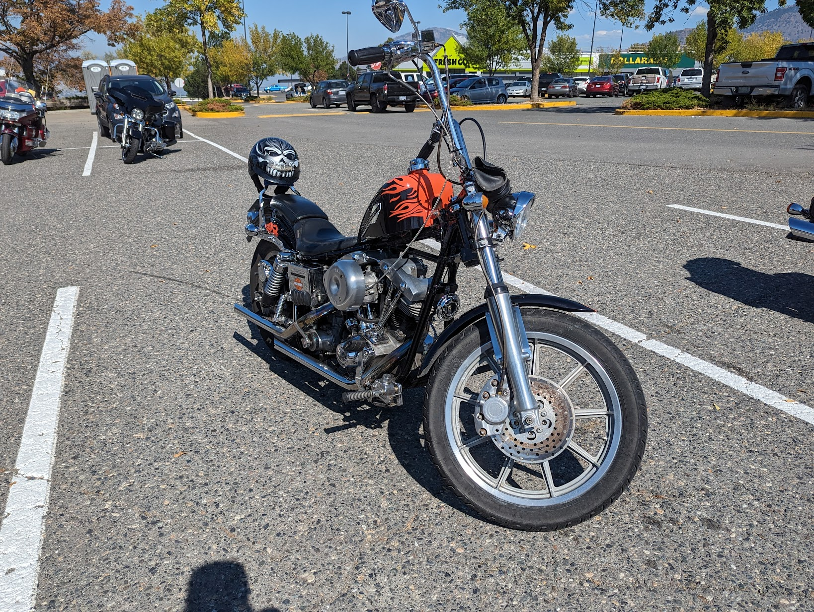

Modern tech portfolio
Currently focused on Microsoft 365, endpoint reliability, and practical user-first support
IT Support Engineer Turning Complex Problems Into Practical Solutions
I help people and businesses keep technology running smoothly with practical, user-first IT support.
How I work
- Reliable
- Practical
- Approachable
Microsoft 365
Intune
JAMF
PowerShell
ServiceNow
Entra ID
SharePoint
OneDrive
About me
Credible on the technical side, grounded on the human side.
I enjoy the part of IT that directly helps people. Good support is not only about fixing issues. It is about making technology simpler, more stable, and easier for people to rely on.
Across more than 15 years in IT, I've supported end users, managed devices, resolved escalations, and improved daily reliability across a broad mix of tools and environments. My experience spans both MSP and enterprise settings, which means I'm comfortable moving between fast-moving client work, structured internal support, and systems that need both stability and care.
Outside work, I'm passionate about technology, cars, motorcycles, photography, and travel. Those interests say a lot about how I approach my work too: curious, practical, observant, and always looking for better ways to make things work.
“I enjoy making technology work better for people.”
What I do
Support, systems, and the details that keep work moving.
My focus is practical IT that improves daily operations, keeps devices dependable, and reduces friction for real users.
IT Support
- User support across hardware, software, and Microsoft 365 issues
- Ticket handling, escalations, remote support, and onsite troubleshooting
- Reliable service delivery with strong customer care and clear communication
Endpoint Management
- Intune, JAMF, and SCCM-driven deployment and device lifecycle support
- Policy management, patching, compliance, and endpoint reliability
- Consistent device setup across Windows and Apple environments
Systems Administration
- Active Directory, Entra ID, Microsoft 365 admin, and permissions management
- SharePoint, OneDrive, backup, VPN, firewall, and infrastructure support
- Practical administration that improves access, security, and stability
Experience highlights
Support scale, technical maturity, and real-world reliability.
These roles show the progression from hands-on technical support to broader systems, endpoint, and enterprise-focused responsibilities.
2024 - Present
MSP environmentThe Human IT Company
IT Support Specialist | Vancouver, BC
Supporting diverse clients across day-to-day IT operations, cloud and on-prem needs, Microsoft 365, endpoint tools, user administration, troubleshooting, and the practical issues that shape real MSP work.
2018 - 2022
Enterprise supportDentsu Aegis Network
Senior Information Technology Specialist | Mumbai, India
Delivered high-volume enterprise support, handled escalations, and worked across ServiceNow, Intune, JAMF, Active Directory, Entra ID, Group Policy, and SCCM while collaborating with vendors and internal teams to keep support dependable at scale.
2007 - 2017
Client-facing supportProdcon Tech. Services
IT Support Technician | Mumbai, India
Built a strong foundation in technical troubleshooting, client communication, device deployment, network issue resolution, and day-to-day support workflows that keep business operations stable.
Projects
Practical IT work that improves reliability, access, and support efficiency.
These are the kinds of initiatives I've contributed to across user support, administration, and systems operations.
Microsoft 365 Migration
Planned and supported Microsoft 365 migrations, user onboarding, account setup, and service continuity for business environments.
Tools: Microsoft 365, Exchange Online, SharePoint, OneDrive
SharePoint and OneDrive Setup
Configured collaboration spaces, file access, sync workflows, and migration support to make team content easier to manage and share.
Tools: SharePoint, OneDrive, Microsoft 365
Intune and JAMF Device Management
Managed Windows and Apple endpoints for smoother deployment, policy consistency, patching, and ongoing device reliability.
Tools: Intune, JAMF, SCCM
Firewall and VPN Support
Supported secure connectivity, firewall changes, VPN access, and real-world network troubleshooting for business users and remote teams.
Tools: Sophos, DNS, DHCP, VPN, firewall rules
Backup and Recovery Systems
Maintained backup integrity, recovery readiness, and operational confidence across business systems that required dependable protection.
Tools: Comet, Duplicati, Windows Server Backup
PowerShell Automation
Created repeatable scripts for admin tasks, support fixes, and routine actions that reduced manual effort and improved consistency.
Tools: PowerShell, Windows, Microsoft 365
Teams Phone and Voice Support
Supported voice and collaboration workflows to keep communication reliable for users working across modern Microsoft environments.
Tools: Teams Phone, Microsoft 365, support operations
Active Directory and Access Management
Handled identity, permissions, onboarding, offboarding, and access control to keep user management secure and efficient.
Tools: Active Directory, Entra ID, Group Policy, MFA
Personal side
What keeps me curious outside of work.
The best support work is practical and human. These interests are part of what shapes that mindset.
Technology
I enjoy staying current with tools, systems, and practical innovations that make work smoother.
Cars and Motorcycles
A strong personal interest that reflects my appreciation for design, mechanics, and performance.
Photography
A creative outlet that sharpens how I notice detail, composition, and the story inside a moment.
Travel
I enjoy exploring new places and experiences that broaden perspective and keep life interesting.
Life beyond work
Room for a more personal visual story.
A few moments outside work that reflect the same curiosity, detail, and real-world perspective I bring to technical support.

Contact
Experienced, reliable, user-focused, and approachable.
If you're hiring for support, endpoint, or systems-focused roles, or if you want someone who brings strong troubleshooting with a calm, practical style, I'd be glad to connect.